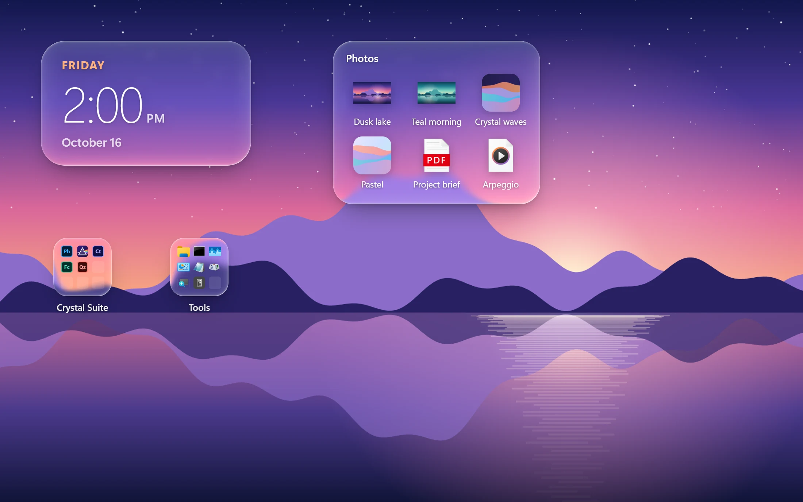
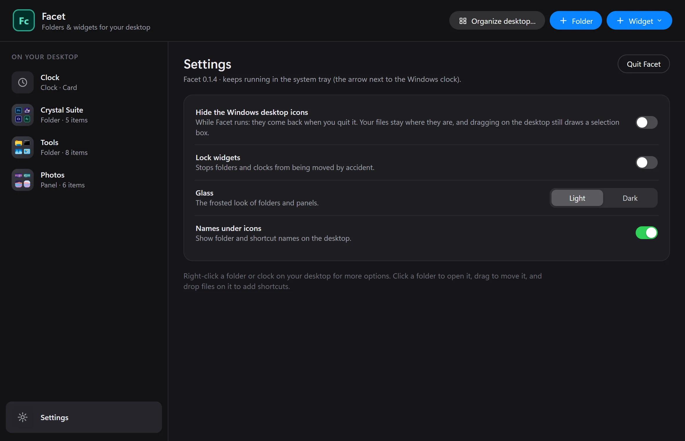

Facet
Folders and widgets that live on the Windows desktop itself: iPhone-style folders for your shortcuts, a clock, Spotify and a Control Center, in liquid glass.

A desktop you’ll want to look at
Folders like on an iPhone
A tile that opens in place. Drag apps, files and folders in, rename it, or show it as an always-open panel.
Liquid glass
Clear glass over your actual wallpaper, with a bright edge and a highlight that follows the pointer.
A clock you design
Four faces, six fonts, weight, size and colour, 12 or 24-hour, seconds and the date.
Spotify and Control Center
Now playing with its controls, plus Wi-Fi, Bluetooth, night light, brightness and volume.
Organize desktop
Sorts your desktop into Apps, Games, Documents, Pictures and more. Nothing is moved: folders hold shortcuts.
Light on your PC
Starts when you sign in and idles at well under 1% CPU.

More free apps
Get Crystal Suite
Free for Windows 10 and 11. Install the launcher, then add any app with one click.